электронный
ресурс по учебной дисциплине 1-58 01 01 - "ИНЖЕНЕРНО-ПСИХОЛОГИЧЕСКОЕ ОБЕСПЕЧЕНИЕ ИНФОРМАЦИОННЫХ ТЕХНОЛОГИЙ".
|
||
| Оглавление | Программа | Теория | Практика| Контроль знаний | Об авторах | ||
|
Оглавление
Лабораторная работа 12 Построение презентационного уровня репозитория. Создание отчета. 1. Цельработы Формирование навыков по работе с презентационным уровнем репозитория Administration Tools. Создание отчета, работа с таблицами и диаграммами. 2. Учебный материал по лабораторной 1. Построение презентационного уровня Для построения презентационного уровня выполните следующие действия: 1. Перетащите бизнес модель SH из окна Business Model and Mapping в окно Presentation, чтобы создать каталог SH в окне Presentation. 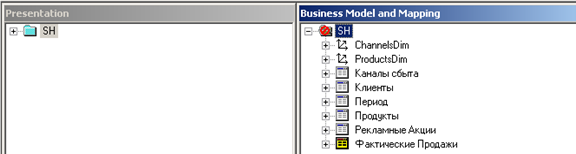 2. Откройте список подпунктов каталога SH в окне Presentation. Обратите внимание, что таблицы и столбцы в окне Presentation в точности как таблицы и столбцы в окне Business Model and Mapping. Заметьте, что в окне Presentation иерархия не отображается. 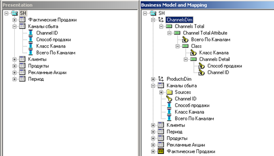 3. Сохраните репозиторий SH. Не проводите проверку непротиворечивости.
1.Тестирование и Проверка Репозитория Проверяем на непротиворечивость: 1. Выберете File > Check Global Consistency. 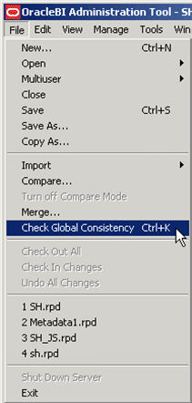 2. Появиться сообщение, в котором подтверждается, что репозиторий не содержит противоречий, и спрашивается, хотим ли мы сделать его доступным для запросов. 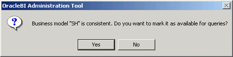 3. Нажмите Yes, чтобы бизнес модель SH была доступна для запросов. Откроется окно Consistency Check Manager. 4. Если в окне Consistency Check Manager сообщается об ошибках Error, тогда необходимо отредактировать репозиторий и запустить проверку на непротиворечивость заново. Если сообщается только о предупреждениях Warning и рекомендациях Best Practices, тогда их можно проигнорировать и нажать кнопку Close. 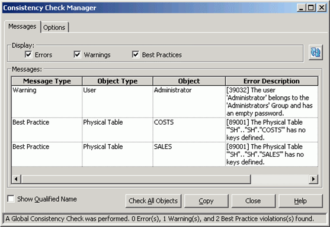 5. В окне Business Model and Mapping обратите внимание, что значок бизнес модели SH изменился и показывает, что теперь бизнес модель доступна для запросов (красный кружок с перечеркивающей линией исчез). 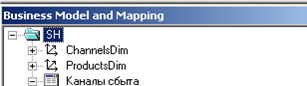 6. Дважды кликните по бизнес модели SH, откроется диалоговое окно Business Model. Заметьте, в поле Available for queries установлен флажок. 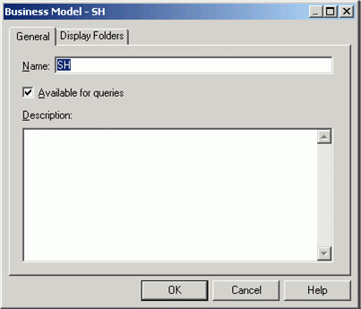 7. Нажмите OK чтобы закрыть диалоговое окно Business Model. 8. Сохраните репозиторий. Выберете No, когда вас спросят о проверке на непротиворечивость. (Вы только что проделали это). 2. Открытие Доступа к Запросам 1. Выберите Manage > Security. 2. В левом окне Security Manager выберете Users. В правом окне появится пользователь Administrator. 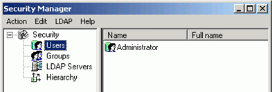 3. В правом окне дважды кликните по пользователю Administrator. Откроется диалоговое окно User. 4. В закладке User в поле Password напишите Administrator и затем подтвердите пароль в поле Confirm Password. В поле Logging level установите значение 2. 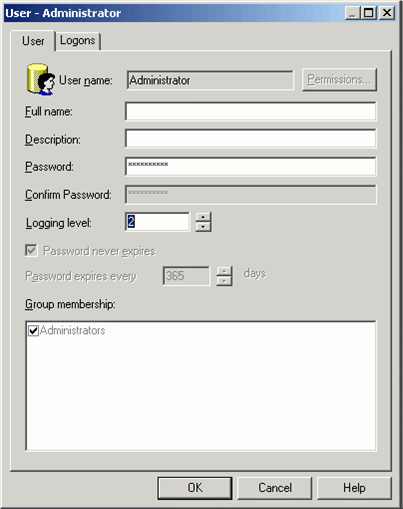 5. Нажмите OK, чтобы закрыть диалоговое окно User. 6. Выберите Action > Close, чтобы закрыть окно Security Manager. 7. Сохраните репозиторий. Не проводите проверку непротиворечивости. 8. Выберите File > Close, чтобы закрыть репозиторий. 9. Выберите File > Exit, чтобы закрыть окно Administration Tool. 3. Перезапуск Сервисов Oracle BI Для перезапуска сервисов каталога Presentation Catalog выполните следующие действия: 1. Нажмите Start > All Programs > Administrative Tools > Services. 2. В диалоговом окне Services выберите Oracle BI Presentation Server, а затем Action > Stop чтобы остановить сервис. Также остановите Oracle BI Server сервис. Эти сервисы могут быть остановлены в любом порядке. 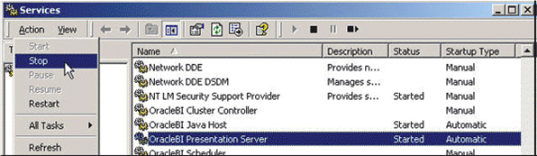 3. Откройте 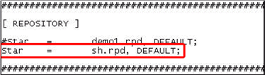 NQSConfig.ini – это файл инициализации, который считывает Business Intelligence Server при запуске. В данной секции мы указали серверу, какой репозиторий с данными необходимо считывать. 4. В диалоговом окне Services выберете сервис Oracle BI Server, далее выберете Action > Start. Также стартуйте сервис Oracle BI Presentation Server. 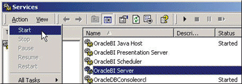 5. В браузере откройте http://localhost/analytics, введите Administrator в поле User ID пароль, нажмите Log In. 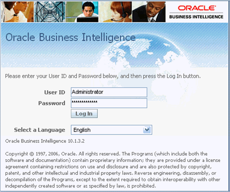 4. Создание Отчетов и Графиков 1. Кликните по ссылке Answers, чтобы перейти на страницу Answers и кликните по SH в поле Subject Areas 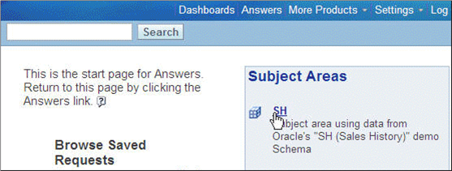 В данном примере указан только SH, но может быть указан целый список репозиториев Oracle Business Intelligence. 2. В левом окне страницы Answers кликните на значок «+», чтобы посмотреть содержимое папки Период. Выберете Номер Месяца, чтобы добавить этот показатель в критерии запроса. В окне справа появился столбец Номер Месяца. 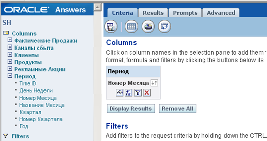 3. Кликните по Название Месяца, чтобы добавить в критерии запроса. Из папки Продукты выберите Категория Продукта. Из папки Фактические Продажи выберете Итоги продаж. 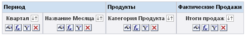 4. Нажмите значок фильтра Filter на столбце Квартал для добавления фильтра. 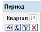 5. В диалоговом окне Create/Edit Filter, нажмите All Choices для просмотра всех значений столбца. Вы можете ограничивать количество значений, используя критерии в поле Match. Далее вы выбираете Limited Choices. 6. В поле Operator выберете значение "is greater than or equal to" и нажмите «2000-01» справа. Запись «2000-01» добавилась в поле Value справа. Нажмите OK. 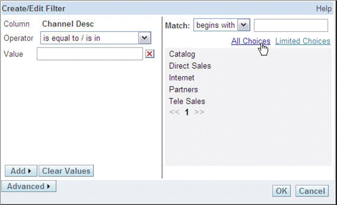 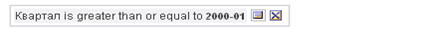 7. Нажмите на закладку Results, чтобы посмотреть результаты Вашего запроса. 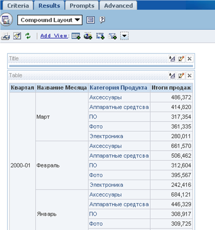 5. Использование Функции Суммирования 1. Нажмите на Edit view для просмотра таблицы на странице – макете отчета Compound Layout 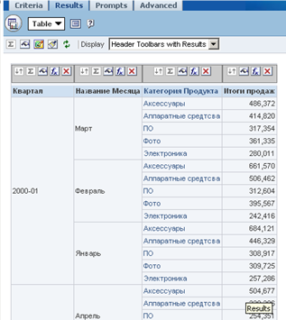 2. Нажмите Total By над столбцом Квартал. После каждого квартала получаем итоговую сумму. 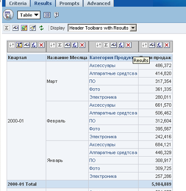 6. Создание Диаграммы Для создания графика проделайте следующие операции: 1. Нажмите Chart в меню View. По умолчанию построится следующая диаграмма (Vertical Bar graph). 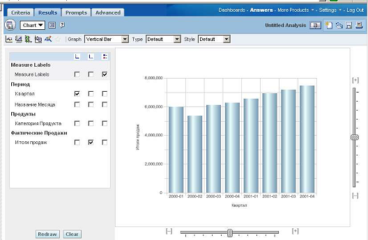 2. Выберете Line из списка в поле Graph и 2D в поле Type. 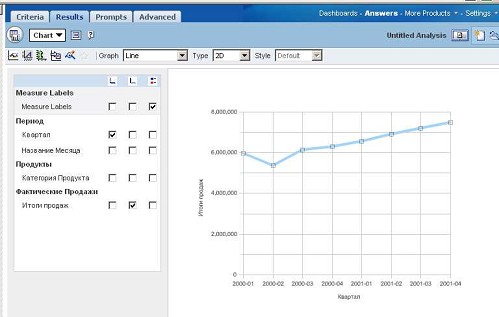 3. Под значком поставьте галочку напротив Категория Продукта, чтобы построить график по всем категориям продуктов. Нажмите кнопку Redraw. 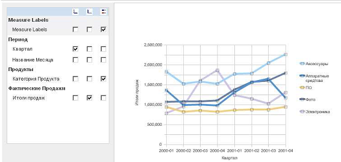 4. Нажмите General Chart Properties . В диалоговом окне General, поставьте галочку напротив Custom Title и введите Итоги продаж за период 2000-01 – 2001-04 и нажмите OK. 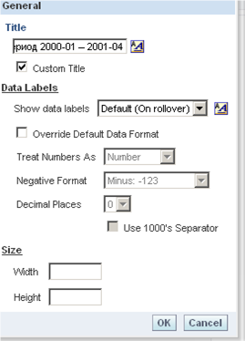 5. Теперь график имеет заголовок. 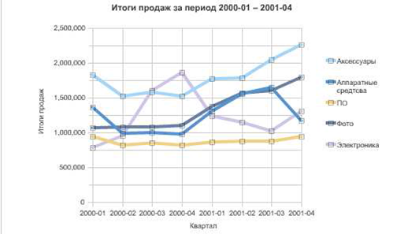 6. Выберите Compound Layout из меню View. 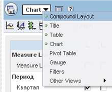 7. Нажмите Add View и выберите Chart, чтобы добавить график в лист Compound Layout. 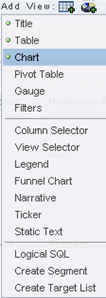 8. На листе Compound Layout за таблицей появился график. 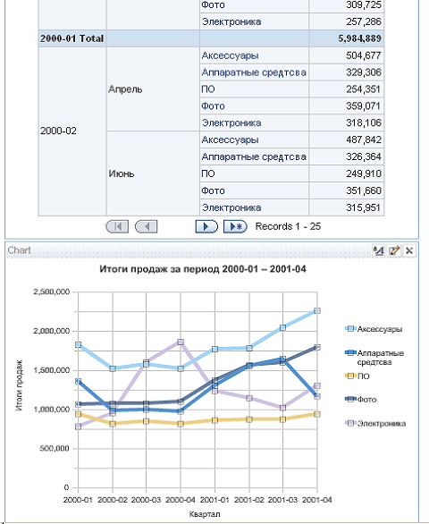 9. Нажмите Delete View в разделе Title, чтобы удалить его из Compound Layout.
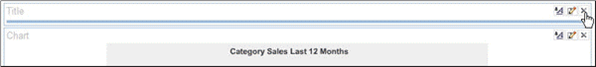 10. Нажмите Save Request 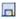в правом углу страницы. В диалоговом окне Save Request выберите Shared Folders, затем нажмите Create Folder. В поле Caption впишите Learn и нажмите OK. 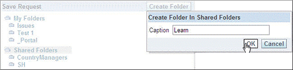 11. В диалоговом окне Save Request кликните по папке Learn. Введите в поле Name имя Итоги продаж и нажмите OK. 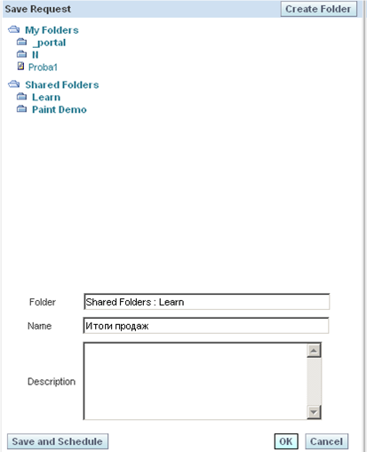 3. Порядок выполнения работы 1. Ознакомиться с учебным материалом 2. Построить презентационный уровень в репозитории Administration Tools 3. Протестировать и проверить репозиторий на наличие ошибок 4. Открыть доступ репозитория к запросам 5. Перезапустить сервисы Oracle BI 6. Создать простой отчет на основе SH Subject Area 7. Использовать в своем отчете функцию суммирования 8. Создать диаграмму 9. Согласовать с преподавателем содержание отчёта и подготовить его.
|
| (С) БГУИР |